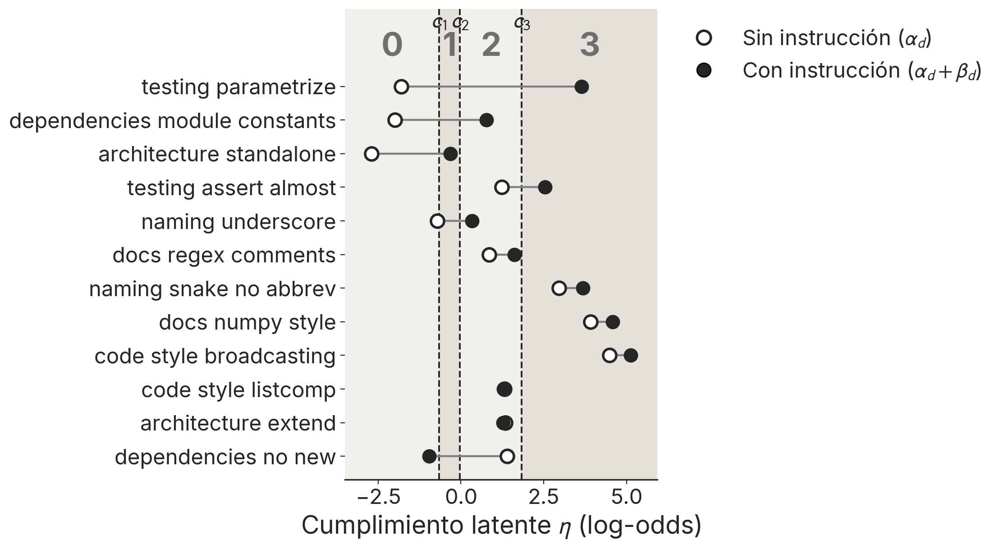
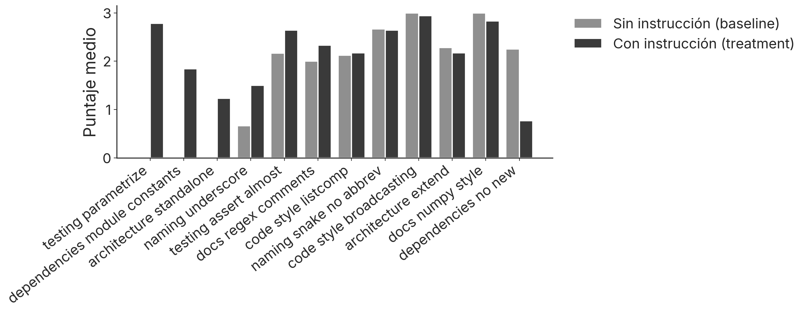
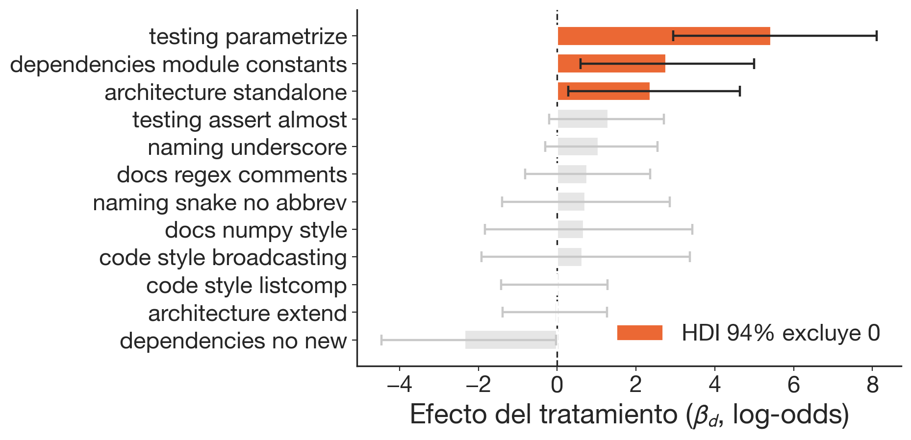
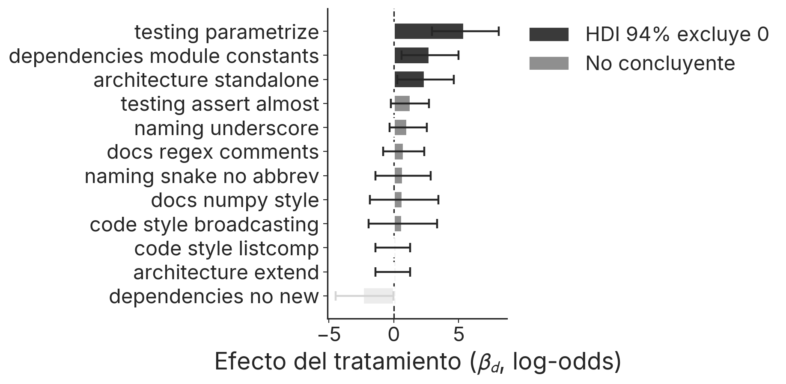
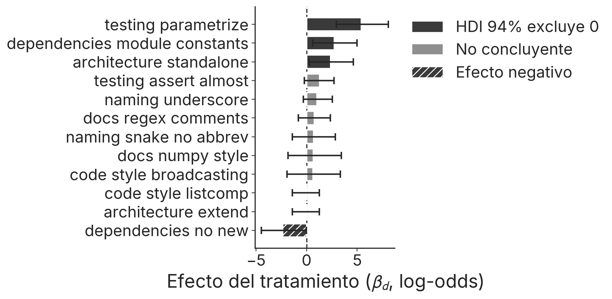
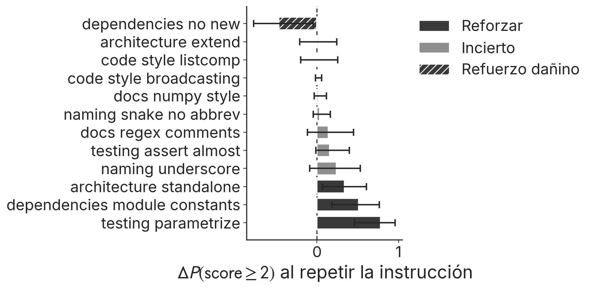
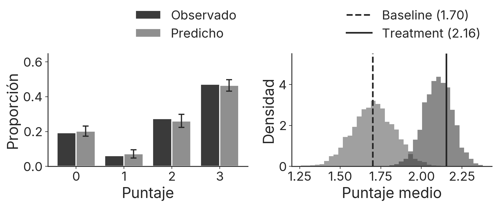
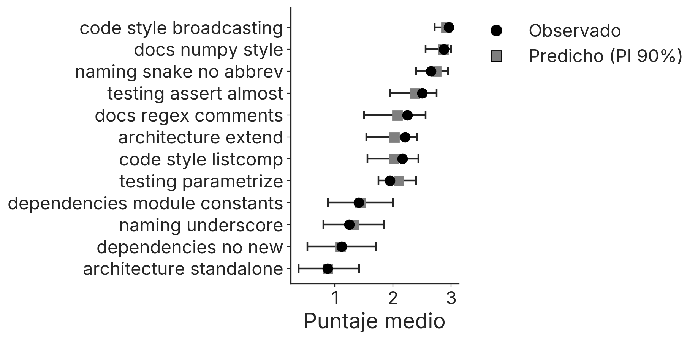

Los agentes corren cientos de turnos llamando herramientas sin que nadie revise cada paso, mientras que sus límites operativos y salvaguardas se declaran al principio de la sesión.
Cada instrucción queda enterrada bajo el output que se acumula después de ella y compite por atención contra todo lo que sigue.
La adherencia se degrada a medida que el contexto crece, con caídas promedio documentadas del 39% en configuraciones multi-turno (Laban et al., 2025), porque la atención no se distribuye uniforme sobre la ventana.
Los estudios existentes reportan adherencia promedio sobre conjuntos de instrucciones.
Medimos qué retiene el modelo instrucción por instrucción, y la retención resulta muy despareja.
Sesiones de código simuladas de 25 turnos, con 12 preferencias plantadas como pedidos casuales del usuario.
El código generado en los turnos de prueba se puntúa de 0 a 3 con reglas fijas, expresiones regulares que buscan el patrón pedido en el código (el decorador parametrize, los for sobre arrays). El baseline corre las mismas sesiones sin plantar nada.
El puntaje 0 a 3 es una posición sobre una escala latente dividida por tres cortes, y decir la instrucción desplaza esa posición en βd.

Una regresión logística ordenada con efectos jerárquicos estima un efecto por instrucción.
244 observaciones, 28 conversaciones, 5 modelos, 3 codebases. σβ mide cuánto varían las instrucciones entre sí, y su posterior da 2,1.


testing parametrize pasa de no usarse nunca (baseline 0,00) a retenerse cuando se pide (β = 5,4)


la regla de dependencies no new cuenta como nuevo cualquier import, incluidos los ya presentes en el archivo

una ganancia baja no justifica descartar una regla de seguridad, solo ahorra repetición en preferencias ordinarias
Los interceptos por modelo y por codebase concentran su posterior cerca de cero (σ ≈ 0,3), de modo que la heterogeneidad vive en las instrucciones y no en quién ejecuta ni dónde.
La retención tampoco sube de 26B a 120B parámetros.
Con baseline de un solo modelo esto sostiene invarianza débil, no ausencia de efectos por modelo.
Una preferencia de código y un guardrail son el mismo objeto, a saber una instrucción dicha una vez que compite por atención, por lo que la retención medida acá es un proxy de cómo aguantaría una salvaguarda declarada.
Como la seguridad es conjuntiva, el cumplimiento agregado puede verse alto mientras la única regla que importa ya cayó.
github.com/korentomas/not-all-instructions
Gracias.

cero divergencias, R̂ ≤ 1,01, ESS mínimo 1311, medias 1,70 (baseline) y 2,16 (treatment)

Ordered logit con cutpoints ordenados por incrementos positivos, efectos jerárquicos no centrados por tipo de decisión, y priors débilmente informativos en escala log-odds, a saber μα ~ N(0, 1.5), μβ ~ N(0, 1) centrado en cero, σ ~ Exp(1).
PyMC con sampler nutpie (NUTS), 4 cadenas de 1000 draws tras 1000 de tuning. Prior y posterior predictive checks en el repo.
La regla que puntúa esta instrucción cuenta cualquier sentencia import como nueva, incluidos los imports ya presentes que el modelo vuelve a mostrar al reescribir un archivo, de modo que el puntaje castiga una conducta que la instrucción no prohíbe.
La dirección negativa es creíble (P(β < 0) = 0,98) pero la magnitud queda abierta, y separar la negación del contenido (comparar "avoid new imports" con "use only existing imports") lo resolvería.
Bajo un refit solo-Qwen (baseline y treatment del mismo modelo) dos de los tres efectos positivos retienen su HDI sobre cero, y el ranking de refuerzo se mantiene estable.
Sensibilidad a priors y exclusión del sentinel −1 documentadas en el repo.